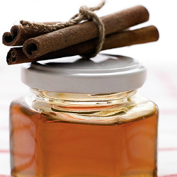
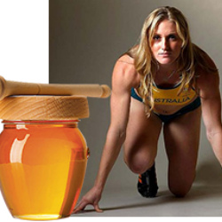
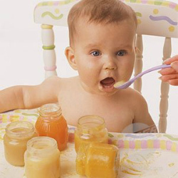
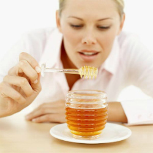

Мед, этот ценнейший концентрат солнечных лучей, был обнаружен человеком еще во времена, когда люди обитали в пещерах.Многие тысячелетия мед был единственным подслащивающим средством, которым располагал человек, редкой и ценной пищей, которой, по словам легенд, питались и боги Олимпа.

Чтобы собрать нектар для одной ложки меда (30г), пчела должна сделать 200 вылетов. Во время интенсивного медосбора она делает за день приблизительно 10 вылетов. Таким образом, чтобы угостить вас ложечкой душистого меда, 200 пчел должны трудиться полный рабочий день. Во время медосбора за нектаром летает около половины пчел семьи. Таким образом, в семье массой 5 кг за нектаром вылетает 2,5 кг или 25 тыс. пчел. Если каждая пчела сделает 10 вылетов, то все вылетающие пчелы сделают 250 тыс. полетов и могут принести в улей 7,5 кг нектара. При этом пчелы пролетают расстояние, которое составляет 2 млн. 750 тыс. километров.
Как нам известно, мед состоит на 75 процентов из Сахаров,его питательный вклад в организме в первую очередьэнергетический. Однако мед отличается от всех других продуктов,содержащих угле-воды (хлеб, мучные изделия, сахар, мармелад и другие) тем, что в этих продуктах сахары содержатся вкомплексных, трудно перевари¬ваемых, формах. Ведь человеческий организм может усваивать лишь простые сахары. Сахары в меде содержатся именно в такой форме и немедленно усваиваются, без предварительной обработки. Ложечка меда дает организму 60 калорий, которые превращаются в энергию быстрее, чем любой другой пищевой продукт. Во время превращения нектара в мед, пчелы производят распад молекул высших Сахаров, освобождая от этой работыпищеварительный аппарат человека. Поэтому мед — идеальный пищевой продукт в случае, когда организму нуженэнергетический вклад без утомления пищеварительного аппарата. Кроме того это гигиенический продукт питания. Было экспериментально доказано, что при заражении меда зародышами самых опасных болезней, эти зародыши быстро уничтожаются благодаря особым бактерицидным свойствам меда. Однако самые ценные свойства придаются ему биологической структурой второстепенных компонентов, действие которых проявляется в самых разных частях организма. Мед это не только ценный натуральный продукт, обнаруженный современной диететикой, но и настоящий медикамент, который будет все шире применяться в терапевтике.

Мед обладает обеззараживающими и противоплесневыми свойствами. Он не портится и может сохранять свои вкусовые свойства в течение столетий и даже тысячелетий. Известно, что тело Александра Македонского, скончавшегося во время похода на БЛИЖНИЙ Восток, было перевезено для погребения в столицу Македонии, погру-женным в мед. Бактерицидные свойства меда объясняются тем, что он предохраняет органические вещества от гниения, и потому что прекращает доступ к ним воздуха, и вследствие того, что содержит муравьиную кислоту (отличное противогнилостное средство). Антибактериальные вещества (ингибиторы) в составе меда, которые угнетают развитие микрофлоры, - продукт секреторной деятельности пчелы. Поэтому искусственный мед (полученный без участия пчелы) лишен антибиотических веществ. При длительном хранении мед постепенно густеет, мутнеет и превращается в плотную массу вследствие кристаллизации (засахаривания) глюкозы. Кристаллизация натурального меда свидетельст¬вует о большом содержании в нем виноградного сахара (глюкозы) и хорошем качестве меда. Фруктоза не кристаллизуется, поэтому сор¬та меда с большим содержанием фруктозы не густеют.
Высшие сорта меда (содержащие наименьшее количество влаги) получаются при его вытекании из сот под воздействием собственной тяжести (мед-самотек) или при центрифугировании в специальных аппаратах. Низшие сорта меда (повышенной влажности) получают вытапливанием его- из сот на огне. Засахарившийся мед легко превратить в жидкий, если сосуд с ним поместить в горячую воду (до 60 °С). При разогревании меда на открытом огне произойдет разрушение ферментов и потеря ценных качеств меда. Если при хранении меда образуются два слоя (снизу закристаллизовавшийся, а сверху - сиропоподобный) - это означает, что мед незрелый, с повышенной влажностью и непригоден для длительного хранения. Мед очень гигроскопичен. В условиях высокой влажности при температуре+(11-19)°С он может закисать. Хранить мед следует при температуре 5-10 °С в сухом хорошо проветриваемом помещении, где нет сильно пахнущих продуктов, так как он легко воспринимает посторонние запахи. Удобнее всего хранить мед в стеклянной посуде, а также в бочках из липы, осины, ольхи, тополя. В дубовых бочках мед темнеет. Нельзя оставлять мед в оцинкованной и алюминиевой посуде, так как при этом образуются ядовитые вещества.Чтобы отличить натуральный мед от фальсифицированного, можно воспользоваться рекомендациями: Крахмал, мел легко обнаружить, растворив мед в воде: если мед чист, раствор получится мутный, без осадка; при наличии примеси образуется осадок. Содержание крахмала в меде при добавлении к его раствору нескольких капель настойки йода вызовет синее окрашивание. Примесь мела обнаруживается, если воздействовать на осадок какой-либо кислотой или уксусом (вследствие выделения углекислого газа произойдет вспенивание).
Мед и спортсмены
Среди энергетических продуктов питания, дающих организму «горючее», необходимое для его деятельности, мед безусловно заслу¬жил первое место, будучи легко усваеваемым пищеварительным аппара¬том. Кроме того, из двух Сахаров, образующих большую часть меда, декстроза используется немедленно, в то время как левулеза хранится в печени в виде гликогена и постепенно освобождается при необходи¬мости. Было продемонстрировано наличие среди второстепенных ком¬понентов вещества (гликутила), способного обеспечивать лучшее использование Сахаров мышечными клетками. Благодаря этому веществу мед поддерживает мышечное усилие. Мед — идеальный энергетический пищевой продукт, способный наращивать физический потенциал и выносливость спортсменов. Вы¬дающиеся спортсмены всегда использовали и используют мед как во время тренировок, так и соревнований. Сравнительные исследования, проведенные в спорт-колледже в Канаде, подтвердили недавно преимущества меда перед другими пищевыми продуктами для питания спортсменов. Мед оказался наилуч¬шим продуктом благодаря своей высокой калорийности, отличной усваиваемости, приятному вкусу, отличной переносимости, возможности примешивания его к всевозможным продуктам и напиткам. 2 ложки меда, принимаемые спортсменами за полчаса до соревнования значительно повышают их способности, а после усилия потребление меда значительно сокращает срок исчезновения явлений утомленности. Мед рекомендуется главным образом студентам, которые занимаются и спортом. Он способствует быстрому восстановлению израсходованной энергии и занятиям в хороших условиях. Спортсмены, принимающие мед в перерывах матчей по футболу, хоккею и баскетболу утверждают, что их эффективность повышается и что они в меньшей степени чувствуют усталость в последней части встречи. Спортсмены, участвующие в двух соревнованиях в течение двух дней подряд, лучше переносят второе усилие, если потребляют мед между двумя состязаниями. Потребление 12—16 ложек меда в день, во время еды и перед сном, предупреждает потерю в весе из-за уси¬ленной спортивной деятельности. И, наоборот, во время режимов худения, ложка меда после обеда дает хорошие результаты, создавая ощущение сытости.
Мед и дети
Наблюдающееся почти у всех детей желание полакомиться сла¬достями доказывает, что их организм нуждается в энергетических продуктах. Мед дает очень много калорий, а также ценные вещества, необходимые для гармоничного развития и здоровья молодого организма. КНОТТ и другие указывали, что потребление меда способствует лучшему усвоению кальция и магния, веществ, необходимых для об¬разования скелета. Многочисленные авторы отметили антианемическое воздействие темных медов, ведущих к значительному росту гемоглобина в крови, при улучшении самочувствия, аппетита, веса.В некоторых детских больницах мед успешно введен как заме¬нитель подслащивающих средств, в искусственном питании грудных детей. Некоторые грудные дети трудно переваривают сахарозу, однако отлично переносят мед, сахары которого не требуют обработки организмом. Левулеза в меде усваивается лучше лактозы в молоке. Слегка слабительное воздействие меда используется для борьбы с возможными запорами, путем небольшого увеличения применяемых доз. У детей, которых кормят медом, наблюдается отличная деятельность пищева¬рительного аппарата, повышение аппетита. Мед способствует также прорезанию зубов, а некоторые сорта меда, очень ароматного, оказывают благотворное, успокаивающее действие на нервных детей, легко засыпающих после потребления меда. Кроме того мед обладает очень важным качеством. Его очень любят дети. Зажаренный ломтик хлеба, намазанный сливочным маслом и медом, дети всегда съедают с удовольствием.
Мед в повседневной жизни
Ощущение физической или умственной усталости быстро исчезает, если мы выпьем стакан теплой воды, в которой разбавили несколько ложечек меда. Ни один другой натуральный продукт не поставляет так быстро организму необходимую энергию для его деятельности. Поэтому мед может служить запасом «горючего» применяемого во всех случаях, когда организм нуждается в немедленном энергетическом вкладе. У всех людей с физической и умственной работой в часы перед обедом появляются кризисы пониженной трудоспособности из-за так называемого «скрытого голода», то есть обеднения крови в «горючем».Одна-две ложечки меда, принятые как таковые или разбавленными в воде в момент кризиса, способствуютего немедленному устранению и поддержанию константного уровня трудоспособности за весь рабочий день. Для выздоравливающих особое значение имеет тот факт, что мед дает значительное число калорий без утомления пищеварительного аппарата. Мед рекомендуется и благодаря его терапевтическому воз¬действию на различные органы: стимулирующему — на сердечные мышцы, предохранительному — на печень, мочегонному, противовоспа¬лительному на слизистую оболочку желудка и кишечника, и так далее.Хотя это и кажется парадоксальным, мед применяется с хорошими результатами как при худении, так и добавлении веса. Разумеется, дозы и применение иные в этих двух случаях. При добавлении в весе, мед является добавочным продуктом большой питательной ценности. Он легко переваривается и не загружает пищеварительного тракта. В этом случае мед используется в качестве добавки к другим пищевым продуктам.При худении мед заменяет большую часть других пищевых продуктов. Немного меда после бедных калориями обедов, при режиме худения, придает ощущение сытости. Немецкие диетврачи рекомендуют диеты худения, в которых главная роль принадлежит меду. Диета предусматривает небольшое количество нежирного мяса, сыр, овощи и фрукты и 300—400 граммов меда в день, потребляемого с фруктами или водой. Это способствует худению и одновременно оказывает бла¬готворное влияние на работу печени и на метаболизм вообще.
Мед в качестве медикамента
Принимаемый оральным путем, мед оказался эффективным при ряде заболеваний желудка, в том числе язва желудка, эволюцию котерой удалось замедлить и даже приостановить. Мед оказывает бла готворное влияние на пищевод. Он стимулирует и охраняет его. Исследования подтвердили традиционное использование меда против кашля, заболеваний дыхательного аппарата. Мед, растворенный в воде рекомендуется сердечным больным.Еще во времена Гиппократа мед применялся для лечения на¬кожных ран. Благодаря физическим и химическим свойствам, содержащимся в нем антибиотическим веществам, мед оказывает выражен¬ное бактерицидное действие, быстро устраняя гноение и способствуя рубцеванию рай. Этот вид лечения, о котором упомнимает и ГУБИН, широко использовался в советских госпиталях во время войны, с отличными результатами. Недавно мед был введен в послеоперационное лечение в английских клиниках гипекологической хирургии. Мед используется и для лечения ожогов. Уже несколько лет, как мед предоставлен врачам в виде инъектируемых очищенных растворов, что значительно расширяет сферу его применения. Следует уточнить, что натуральный мед можно инъектировать лишь в результате сложного процесса очищения, возможного лишь в отлично оснащенных лабораториях. Эти очищенные растворы применяются в лечении печени и отравлений. Они оказывают кардиотропное и энергетическое воздействие при заболеваниях кровеносной системы, в подготовке к операции и послеоперационном уходе.Древние греки считали мед и «напитком молодости» и поили им атлетов во время Олимпийских Игр.
Мед в косметике
Состав меда объясняет его традиционное использование к косметике - маски на основе меда применялись в древности и используются и поныне. Помимо содержания фитогормональных и биоактивирующих факторов, ценность меда для косметики кроется в первую очередь в его смягчающих свойствах и способности вызывать путем осмоса увели¬ченный поток крови к кожной ткани, улучшая ее питание. Кроме масок красоты мед — традиционная примесь кремов для липа, которым он придает питательные свойства.На основе результатов многочисленных опытов, выявивших положительное воздействие маточного молочка, применяемого локально, на скорость рубцевания ран, причиненных ожогами и поверхностных ран, а также в лечении различных кожных заболеваний, в конце пятидесятых годов специалисты решили использовать маточное молочко как накож¬ный биоактиватор и оно было введено в многочисленные косметические препараты. Опыт накопленный в эти 20 с лишним лет подтвердили эффекты маточного молочка. Применяемое накожно в виде раствора чистого вещества или в примеси к косметическим эмульсиям, оно сти¬мулирует клеточный метаболизм и нормализирует секрет жировых желез, ограничивает явление старения кожи и тонизирует ее, улучшает гидратацию и эластичность кожи.
Заключение!
Английский писатель доктор Д.Мор писал, что пчела дает возможность излечивать все наши болезни. Вряд ли сегодня можно утверждать, что пчела излечивает все болезни, но несомненно, что продукты пчеловодства благотворно влияют на организм человека. Так, давно известно, что пчеловоды, как правило, не болеют раком. По всей вероятности, это можно объяснить как тем осо¬бенным целебным микроклиматом пасек, который напоен ароматом цве¬тов, меда, прополиса, цветочной пыльцы, так и тем, что человек, работающий на пасеке, пользуется продуктами пчеловодства, медом, цветочной пыльцой, маточным молочком, пчелиным ядом и др. Весь этот комплекс благоприятных условий, положительно влияя на организм человека и, прежде всего, на кору головного мозга, создает невосприимчивость организма к злокачественным опухолям. Кроме того, пчеловоды избавлены от многих нервных и психических пережи¬ваний, от городского шума. В заключение хочется сказать: безусловно, пчелы и продукты пчеловодства не могут быть панацеей от всех болезней, но несом¬ненно и то, что как в лечении многих болезней, так и в решении проблемы долголетия они могут играть и играют немаловажную роль. И если наши советы и рекомендации помогут достичь желаемых результатов, можно считать наш труд не напрасным.